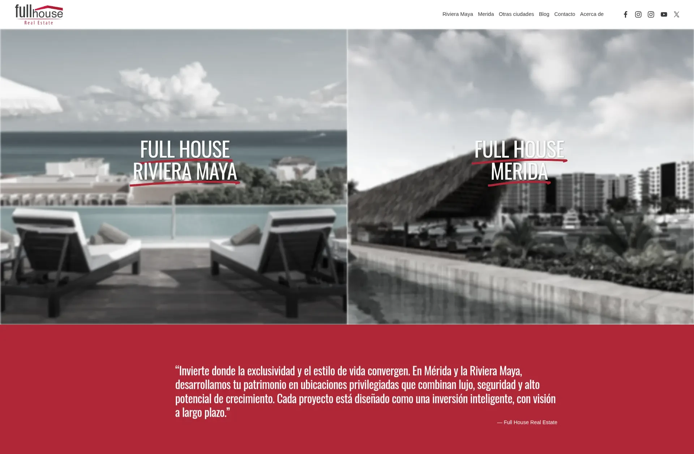
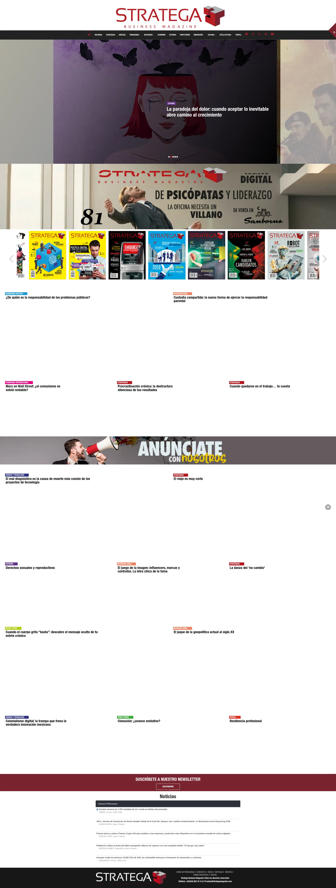
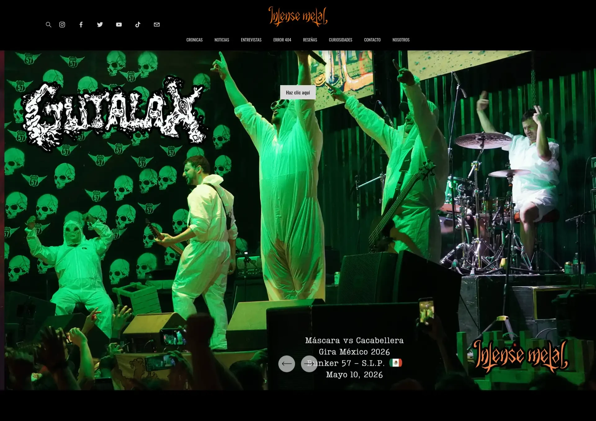

Proyectos de Producción

Plataforma Inmobiliaria Premium
Diseño web de alta gama adaptado para el sector de real estate de lujo. Catálogo interactivo limpio, carga ultra rápida y un embudo visual diseñado específicamente para la captación de inversores.

Revista Digital de Negocios
Plataforma de contenidos enfocada en la legibilidad ejecutiva y el posicionamiento de marca corporativa. Cuenta con una arquitectura de información optimizada para indexación SEO y retención de lectores B2B.

Magazine Audiovisual Dinámico
Plataforma de alta demanda multimedia optimizada para el consumo masivo de contenidos informativos, galerías de fotografías de alta resolución en vivo y coberturas de eventos con velocidad impecable.